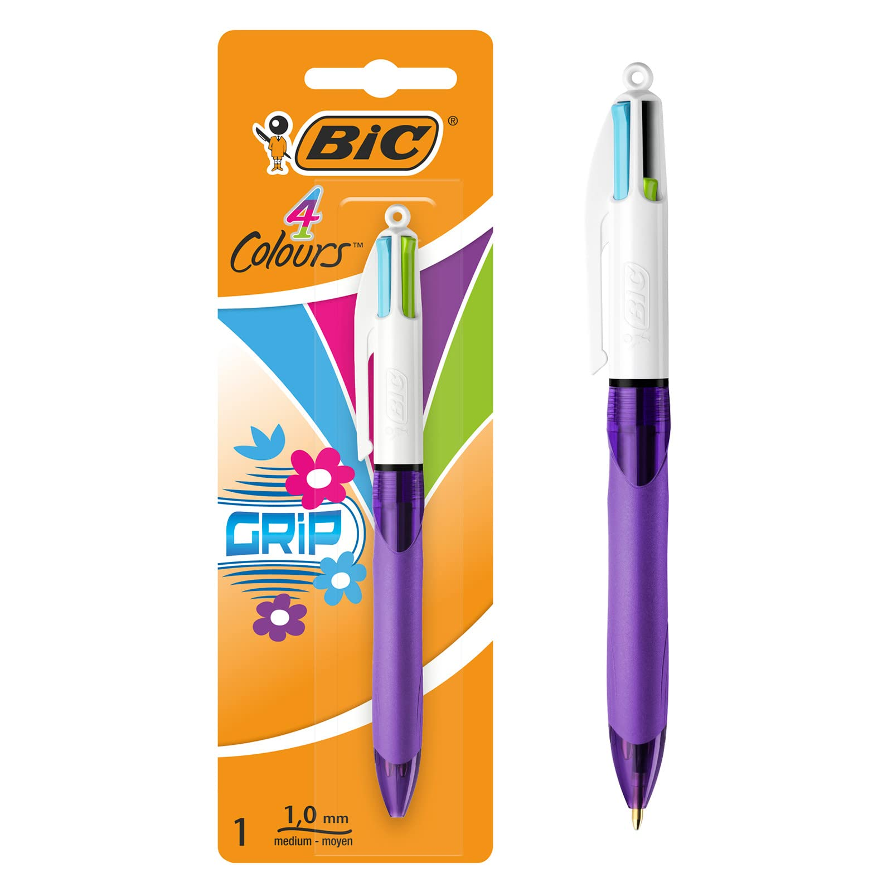

Créé dans les années 70, le Bic 4 couleurs a révolutionné l'écriture grâce à son ingénieuse conception. En un simple clic, il permet de passer du bleu au rouge, du vert au noir. Ce design simple mais innovant a conquis les écoliers émerveillés comme les professionnels en quête de praticité
| Stylo 4 couleurs, le rouge, le noir, le vert et le bleu |  | 6$90 |